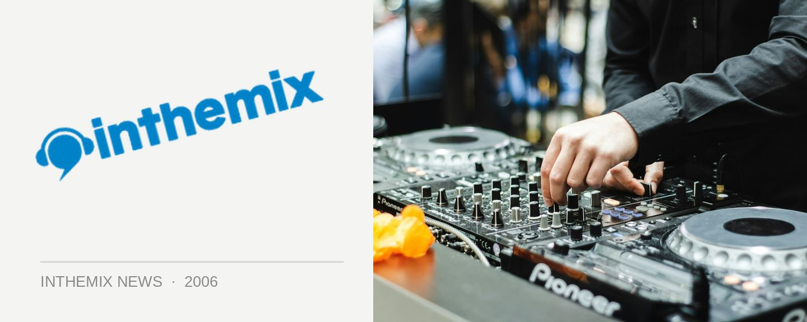

Ministry of Sound brings the ‘Classics’ to SOS on Boxing Day
Anthems will be the focus of the dance music retrospective to be held at the Greenwood Hotel as Ministry of Sound takes over Sounds on Sunday for the Boxing Day event.
Dance classics will be featured across the three rooms with the Courtyard being manned by GT, Dirty South, Goodwill, Jonathan Wall and Shamus. Bringing out the breaks classics will be Elroy, James Taylor and Q45 and funking it up with some classic funk & hip hop will be Tom Piper, Mo’Funk and the Funktrust DJs.
*Catch them all at Ministry of Sound Classics, Sounds on Boxing Day, Greenwood Hotel, North Sydney. Presale tickets cost $25 and are available now on ITM.